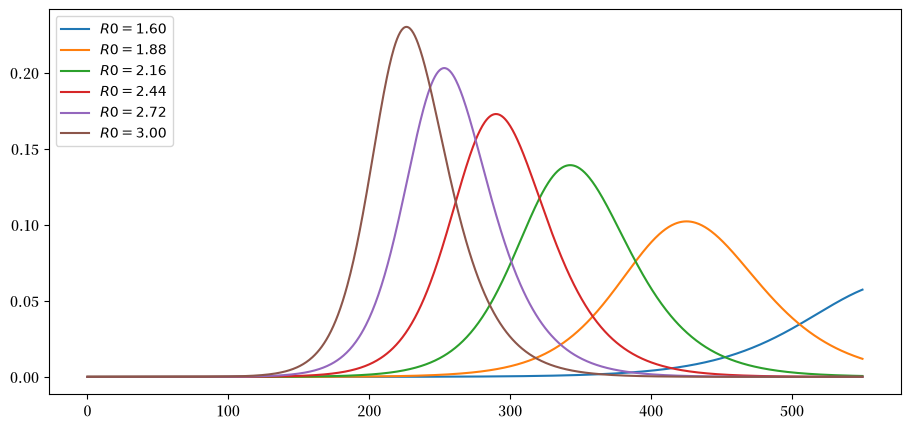
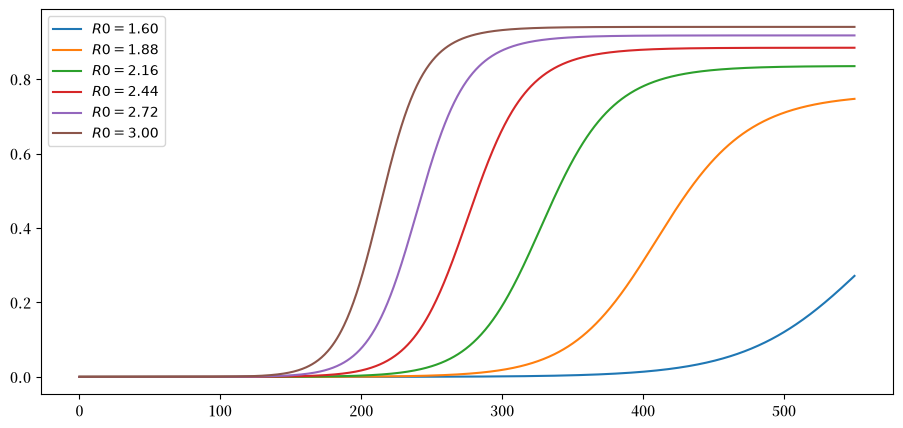
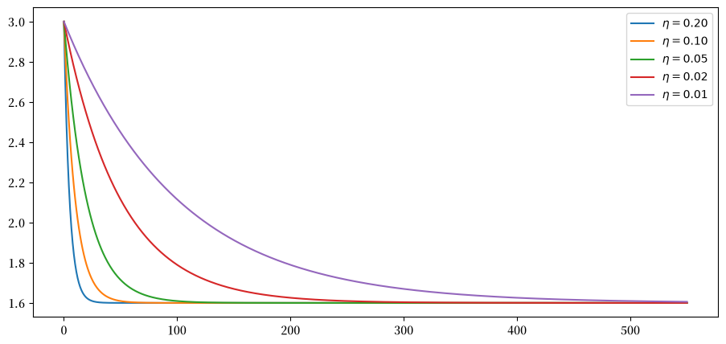
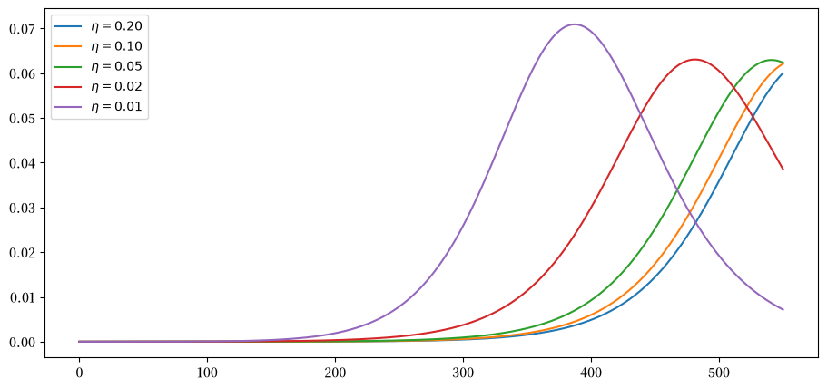
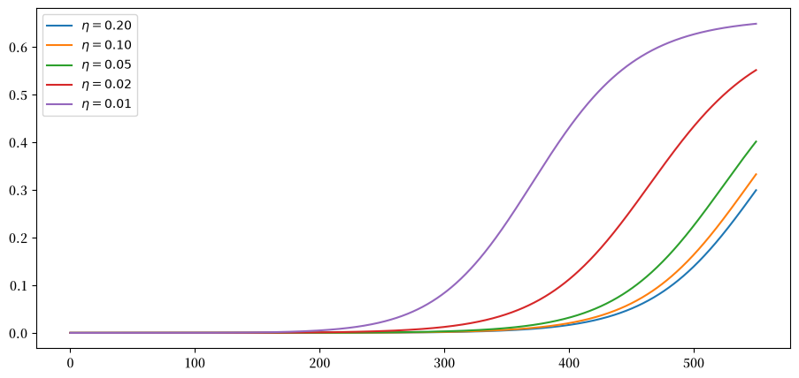
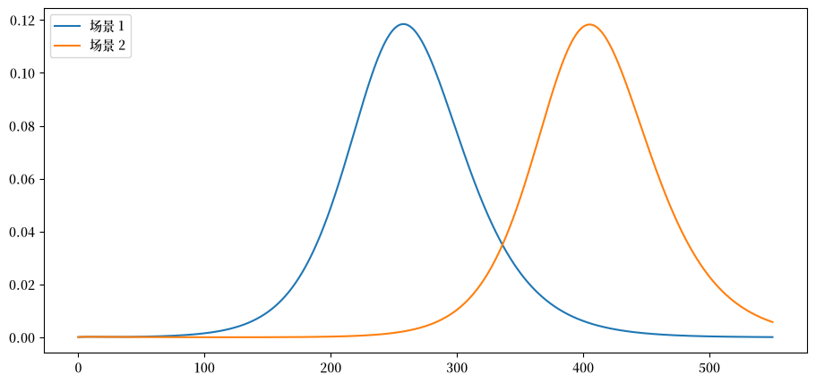
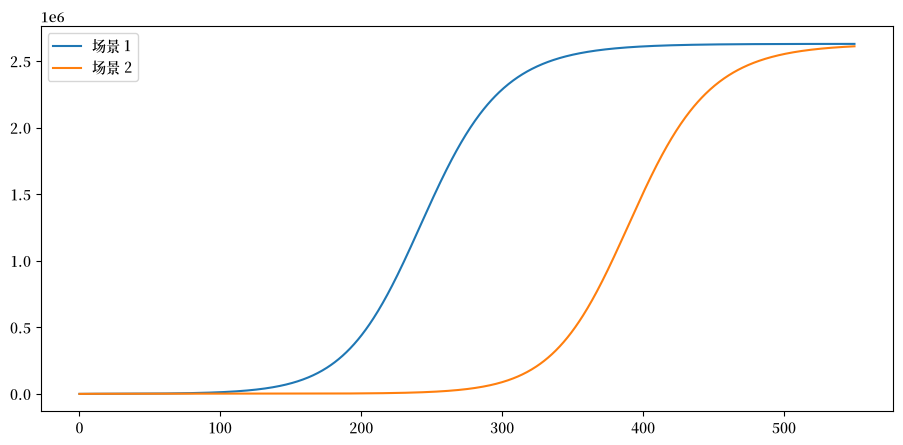
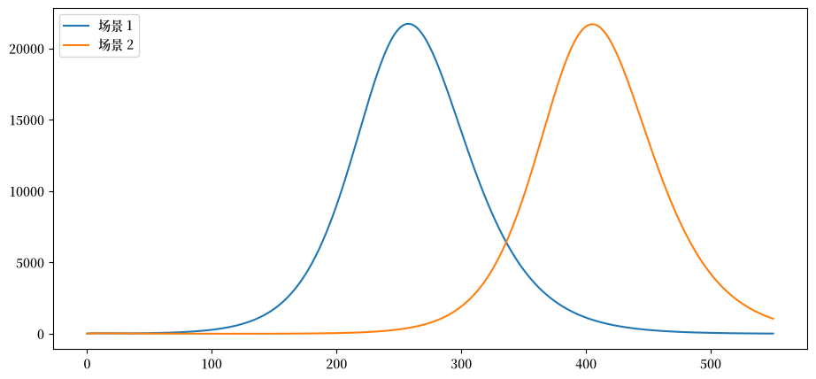

1. 新冠病毒建模#
1.1. 概述#
这是由Andrew Atkeson提供的用于分析新冠疫情的Python代码。
特别参见
他的这些笔记主要是介绍了定量建模传染病动态研究。
疾病传播使用标准SIR（易感者-感染者-移出者）模型进行建模。
模型动态用常微分方程组表示。
其主要目的是研究通过社交距离实施的抑制措施对感染传播的影响。
本课程主要模拟的是美国的结果，当然，也可以调整参数来研究其他国家。
我们将使用以下标准导入：
import matplotlib.pyplot as plt
import matplotlib as mpl
FONTPATH = "fonts/SourceHanSerifSC-SemiBold.otf"
mpl.font_manager.fontManager.addfont(FONTPATH)
plt.rcParams['font.family'] = ['Source Han Serif SC']
plt.rcParams["figure.figsize"] = (11, 5) #设置默认图形大小
import numpy as np
from numpy import exp
我们还将使用SciPy的数值例程odeint来求解微分方程。
from scipy.integrate import odeint
这个程序调用了FORTRAN库odepack中的编译代码。
1.2. SIR模型#
我们要分析的这个版本的SIR模型包含四个状态。
假设人口中的每个人都必须处于这四种状态之一。
这些状态是：易感者(S)、暴露者(E)、感染者(I)和移出者®。
说明：
处于R状态的人已经被感染，并且已经康复或死亡。
假设康复者已获得免疫力。
暴露组中的人尚不具有传染性。
1.2.1. 时间路径#
状态之间的流动遵循路径 \(S \to E \to I \to R\)。
当传播率为正且\(i(0) > 0\)时，人群中的所有个体最终都会被感染。
主要关注的是
在给定时间的感染人数（这决定了医疗系统是否会被压垮）
病例负荷可以推迟多长时间（我们希望能够推迟到疫苗出现）
使用小写字母表示处于各状态的人口比例，其动态方程为
在这些方程中，
\(\beta(t)\) 被称为传播率（个体与他人接触并使其暴露于病毒的速率）。
\(\sigma\) 被称为感染率（暴露者转变为感染者的速率）
\(\gamma\) 被称为恢复率（感染者康复或死亡的速率）。
点符号 \(\dot y\) 表示时间导数 \(dy/dt\)。
我们不需要单独建模处于 \(R\) 状态的人口比例 \(r\)，因为这些状态构成一个分区。
具体来说，”已移除”的人口比例为 \(r = 1 - s - e - i\)。
我们还将追踪 \(c = i + r\)，即累计病例数
(即所有已感染或曾经感染的人)。
系统(1.1)可以用向量形式表示为
其中\(F\)的具体定义参见下面的代码。
1.2.2. 参数#
参数\(\sigma\)和\(\gamma\)由病毒的生物学特性决定，因此被视为固定值。
根据Atkeson的笔记，我们采用以下参数值：
\(\sigma = 1/5.2\) - 这意味着平均潜伏期为5.2天。
\(\gamma = 1/18\) - 这表示患者平均需要18天才能康复或死亡。
传播率被构造为
\(\beta(t) := R(t) \gamma\)，其中\(R(t)\)是时间\(t\)时的有效再生数。
(这个符号表示有点令人困惑，因为\(R(t)\)与表示已移除状态的符号\(R\)不同。)
1.3. 实现#
首先我们将人口规模设置为与美国相匹配。
pop_size = 3.3e8
接下来我们按照上述方法固定参数。
γ = 1 / 18
σ = 1 / 5.2
现在我们构建一个函数来表示(1.2)中的\(F\)
def F(x, t, R0=1.6):
"""
状态向量的时间导数。
* x是状态向量（类数组）
* t是时间（标量）
* R0是有效传播率，默认为常数
"""
s, e, i = x
# 计算新增感染人数
β = R0(t) * γ if callable(R0) else R0 * γ
ne = β * s * i
# 导数
ds = - ne
de = ne - σ * e
di = σ * e - γ * i
return ds, de, di
注意 R0 可以是常数或给定的时间函数。
初始条件设置为
# 初始条件
i_0 = 1e-7
e_0 = 4 * i_0
s_0 = 1 - i_0 - e_0
用向量形式表示的初始条件是
x_0 = s_0, e_0, i_0
我们使用odeint在一系列时间点 t_vec上通过数值积分求解时间路径。
def solve_path(R0, t_vec, x_init=x_0):
"""
给定R0的时间路径，通过数值积分求解i(t)和c(t)。
"""
G = lambda x, t: F(x, t, R0)
s_path, e_path, i_path = odeint(G, x_init, t_vec).transpose()
c_path = 1 - s_path - e_path # 累计病例
return i_path, c_path
1.4. 实验#
让我们用这段代码进行一些实验。
我们要研究的时间段为550天，大约18个月：
t_length = 550
grid_size = 1000
t_vec = np.linspace(0, t_length, grid_size)
1.4.1. 实验1：固定R0的情况#
让我们从 R0为常数的情况开始。
我们在不同 R0值的假设下计算感染人数的时间路径：
R0_vals = np.linspace(1.6, 3.0, 6)
labels = [f'$R0 = {r:.2f}$' for r in R0_vals]
i_paths, c_paths = [], []
for r in R0_vals:
i_path, c_path = solve_path(r, t_vec)
i_paths.append(i_path)
c_paths.append(c_path)
这是一些用于绘制时间路径的代码。
def plot_paths(paths, labels, times=t_vec):
fig, ax = plt.subplots()
for path, label in zip(paths, labels):
ax.plot(times, path, label=label)
ax.legend(loc='upper left')
plt.show()
让我们绘制当前病例数占人口的比例。
plot_paths(i_paths, labels)
findfont: Failed to find font weight normal, now using 600.
findfont: Failed to find font weight normal, now using 600.

正如预期的那样，较低的有效传播率会推迟感染高峰。
同时也会导致当前病例的峰值降低。
以下是累计病例数（占总人口的比例）：
plot_paths(c_paths, labels)

1.4.2. 实验2：改变缓解措施#
让我们来看一个逐步实施缓解措施（例如社交距离）的场景。
以下是一个关于 R0随时间变化的函数规范。
def R0_mitigating(t, r0=3, η=1, r_bar=1.6):
R0 = r0 * exp(- η * t) + (1 - exp(- η * t)) * r_bar
return R0
R0 从 3 开始下降到 1.6。
这是由于逐步采取更严格的缓解措施所致。
参数 η 控制限制措施实施的速率或速度。
我们考虑几个不同的速率：
η_vals = 1/5, 1/10, 1/20, 1/50, 1/100
labels = [fr'$\eta = {η:.2f}$' for η in η_vals]
以下是在这些不同速率下 R0 的时间路径：
fig, ax = plt.subplots()
for η, label in zip(η_vals, labels):
ax.plot(t_vec, R0_mitigating(t_vec, η=η), label=label)
ax.legend()
plt.show()

让我们计算感染者人数的时间路径：
i_paths, c_paths = [], []
for η in η_vals:
R0 = lambda t: R0_mitigating(t, η=η)
i_path, c_path = solve_path(R0, t_vec)
i_paths.append(i_path)
c_paths.append(c_path)
以下是不同场景下的当前案例：
plot_paths(i_paths, labels)

以下是累计病例数（占总人口的比例）：
plot_paths(c_paths, labels)

1.5. 解除封锁#
以下内容复现了Andrew Atkeson关于解除封锁时机的附加研究结果。
我们对比两种解封方案：
\(R_t = 0.5\)持续30天，之后17个月\(R_t = 2\)。这相当于30天后解除封锁。
\(R_t = 0.5\)持续120天，之后14个月\(R_t = 2\)。这相当于4个月后解除封锁。
这里所考虑的参数设定模型初始时有25,000名活跃感染者， 以及75,000名已经暴露于病毒、即将具有传染性的人群。
# 初始条件
i_0 = 25_000 / pop_size
e_0 = 75_000 / pop_size
s_0 = 1 - i_0 - e_0
x_0 = s_0, e_0, i_0
让我们计算路径：
R0_paths = (lambda t: 0.5 if t < 30 else 2,
lambda t: 0.5 if t < 120 else 2)
labels = [f'场景 {i}' for i in (1, 2)]
i_paths, c_paths = [], []
for R0 in R0_paths:
i_path, c_path = solve_path(R0, t_vec, x_init=x_0)
i_paths.append(i_path)
c_paths.append(c_path)
这是活跃感染病例数：
plot_paths(i_paths, labels)

在这些场景下，死亡率会是怎样的呢？
假设1%的病例会导致死亡
ν = 0.01
这是累计死亡人数：
paths = [path * ν * pop_size for path in c_paths]
plot_paths(paths, labels)

这是每日死亡率：
paths = [path * ν * γ * pop_size for path in i_paths]
plot_paths(paths, labels)

如果我们能够将感染高峰推迟到疫苗研发出来之前，就有可能降低累计死亡人数。